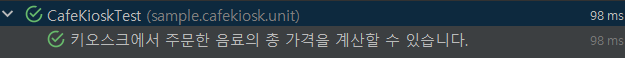

DisplayName을 섬세하게
테스트 코드를 문서로서 기능을 하려면 테스트 코드의 메소드이름을 이해할 수 있게 작성해야합니다.
메소드 명만으로는 테스트가 어떤걸 검증하는지 드러내기가 어렵습니다.
@DisplayName
Junit4버전이라면 메소드 명으로 작성이 가능합니다.
Junit5부터 테스트 코드가 어떤 역할을 하는지 명시해 줄 수 있습니다.
프로덕션 코드를 모르는 상태에서 테스트 코드의 DisplayName을 보고 테스트의 역할을 이해하는데 2번이 더 명확하게 와닿습니다.

아래 방식으로 설정할 경우 DisplayName을 볼 수 있습니다. setting → gradle → compile → IntelliJ
작성 방법
음료 1개 추가 테스트
음료 1개 추가할 수 있다.
- 명사의 나열보다 문장으로
A이면 B이다.
A이면 B가 아니고 C다.
어떤 상태가 주어질 경우 소유자가 어떤 행위를 했고 그 다음 어떤 상태변화가 있었다는 결과까지 명시를 해줄 수 있습니다
~ 테스트 지양하기
단어로 종료되는건 지양해야합니다.
음료 1개를 추가할 수 있다
음료를 1개 추가하면 주문 목록에 담긴다.
- 테스트 행위에 대한 결과까지 기술하기
테스트 행위에 대한 결과까지 기술하는게 좋습니다.
내가 행위를 했을 때 결과가 어떻게 되는지 명시를 하면 섬세한 테스트 코드명이 됩니다.
주문을 생성하는 테스트의 제목을 작성
@DisplayName("특정 시간 이전에 주문을 생성하면 실패한다.")
@DisplayName("영업 시간 이전에는 주문을 생성할 수 없다.")
특정시간이라는 말은 우리 도메인인 카페키오스크의 쓰는 용어가 아니라 일반적으로 사용하는 현상이라는 말에 가깝습니다.
영업시작시간이라는 말은 도메인인 카페 키오스크의 용어에 더 알맞은 용어다. 도메인 용어를 사용해서 더 풍부한 표현을 하는 것이 중요합니다.
도메인 용어를 사용하여 한층 추상화된 내용을 담기
팀원 모두가 공유하고 있는 개념들을 사용해서 사용할 수 있다.
메서드 자체의 관점보다 도메인 정책 관점으로 정책을 녹여서 이름을 표현한다.
테스트의 현상을 중점으로 기술하지 말것
1번의 "실패한다"는 말은 테스트의 내용과는 관계가 없는 단어입니다.
도메인 용어를 사용해서 명확하게 표현하는 게 좋다.